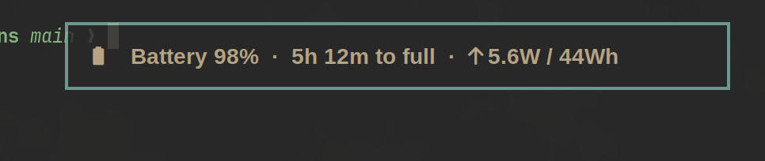
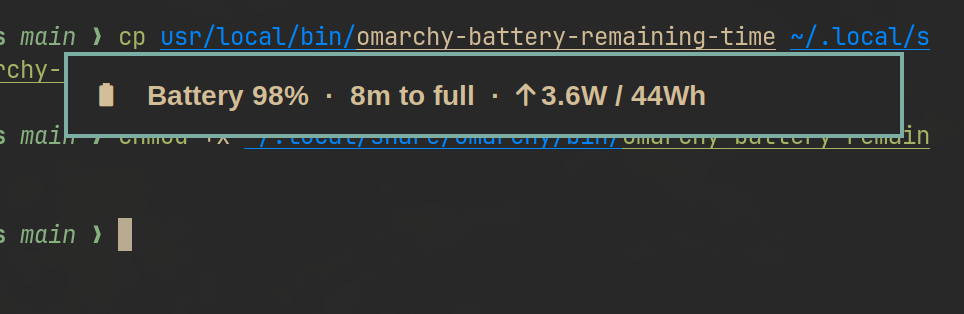

My M3 Pro MacBook's screen cracked in February. The only replacement I could grab on short notice was a 2018 Intel MacBook Air that had been sitting in my sister's drawer. Wiping it and reinstalling macOS took most of an afternoon. Once it was up, I opened Chrome, opened one tab, and Spotlight started lagging under the weight of it. The fan spun up like a drone taking off. macOS doesn't really support this machine anymore, and the machine knows it.
I hadn't talked to my friend David in a while, but I figured he'd approve of the next move. I installed Omarchy on it. The install ran in a handful of minutes, and the same laptop felt lightning fast on first boot.
What Omarchy ships for T2 Macs
Omarchy is DHH's opinionated Arch + Hyprland distribution. The installer already auto-detects T2 hardware and does the heavy lifting: the linux-t2 kernel, the apple-bce driver for keyboard and trackpad, Broadcom WiFi/Bluetooth firmware, t2fanrd, the intel_iommu=on boot parameters.
Out of the box, it booted, logged me in, connected to WiFi. The fan was quiet. Chrome opened six tabs without drama. I had a usable laptop again.
Then I started noticing things.
- Fan curve too aggressive, fans ramping at 50°C.
- Battery indicator said "5h 12m to full" when it clearly meant minutes.
- Keyboard backlight stepped by 0.2% per keypress (500 presses from dim to bright).
- Power profile never switched when I unplugged.
- Suspend would lock the screen black with an unresponsive keyboard.
- WiFi silently stopped working after resume.
The t2linux wiki has answers for most of it if you dig. I spent a weekend with Claude Code in one pane and the wiki in another, writing small config files and shell scripts, one fix at a time. By Monday the machine felt like it was built for Linux.
The repo nobody asked for
Instead of letting the configs rot in my dotfiles, I put them in a repo: fedesapuppo/t2-mac-customizations. A setup.sh that explains every step, asks before doing anything, and is safe to re-run.
Then I dropped a comment in the Omarchy discussion for T2 Macs (#773) listing what the script fixed and linking the repo. I expected zero replies.
DHH answered two hours later:
"On it, David."
One PR per tweak
I split the repo into about a dozen PRs against basecamp/omarchy. Five of them merged in a single afternoon on April 1, 2026:
- #5132 tuned fan curve for T2 MacBooks.
- #5135 percentage-based step for keyboard backlight brightness.
- #5137 battery indicator fix, hours-vs-minutes regex.
- #5145 Bluetooth fix by loading
hci_bcm4377on boot. - #5176 migration script so existing T2 installs also get the fan curve.
Two days later, DHH cut Omarchy v3.5.0, and the batch shipped inside it. Watching someone else's release notes include your own commits is a strange, quiet kind of pleasure.
The small one that took the most staring was the battery bug.
The battery indicator PR
omarchy-battery-remaining-time parses upower inside an awk block. When the battery is nearly full or nearly empty, upower switches its unit from hours to minutes.
DHH had taken a swing at this bug three weeks earlier (2acc2eb), with a strict compare: if (unit == "minutes"). The problem is that upower uses the singular "minute" when exactly one minute remains, and the strict check fell through to the hours path. So "1 minute to full" rendered as "0h 1m", and the divide-by-60 math around it stayed brittle.
The fix was a regex and a shorter print:
if (unit ~ /^minute/) {
printf "%dm", int(value)
} else {
hours = int(value)
minutes = int((value - hours) * 60)
...
}

The subtle complication
A week after the fan curve merged, the fans stopped responding on some boots. Not always, not reproducibly. dmesg showed write_smc_mmio(11 F0Md) failed: 135 on every startup where the fans were stuck. Error 0x87, SmcKeySizeMismatch.
The T2 SMC has three one-byte registers sitting back-to-back: KEY_DATA_LEN at 0x7D, KEY_SMC_ID at 0x7E, KEY_CMD at 0x7F. The applesmc driver was writing to all three with iowrite32, a 32-bit write, so each write was clobbering the next two registers before the command could be issued. A reliable race, hidden by the fact that it only failed on some SMC firmware revisions.
Three lines of the patch, iowrite32 to iowrite8, matching the ioread8 already used to read the same registers. Filed as PR #43 in t2linux/linux-t2-patches and merged on April 7, 2026. My first kernel patch, and it's three byte-sized writes that should have been written that way the first time. Most upstream fixes look this small from the inside.
What changed in how I work
- Broken hardware is an on-ramp, not a wall. I wouldn't have touched Omarchy, let alone an SMC MMIO register, if my M3 hadn't cracked.
- Write the repo before asking to upstream. Having a working script, a README, and specific claims ("fans off below 55°C") made "one PR per tweak" a conversation instead of a proposal.
- Small PRs get merged. Every PR that landed was one concern, one file, a few lines. The ones still pending are the ones that touched multiple systems.
- A clear bug report is now a lot of the contribution. "Fans die on some boots, here's the dmesg line" was enough for Claude to work back to the SMC register layout, the wrong write size in
applesmc, and the right file in the patch series to touch. Describing the symptom precisely is doing most of the work.
I couldn't make it to Omacon in NYC, and a year ago I wouldn't have imagined I could. A year ago I also wouldn't have imagined shipping commits into a Linux distro, or a patch into a kernel, from a laptop that had been gathering dust in a drawer.
I'm Fred Sapuppo, a Rails engineer with a broken MacBook Pro and an old Intel MacBook Air that runs Omarchy.